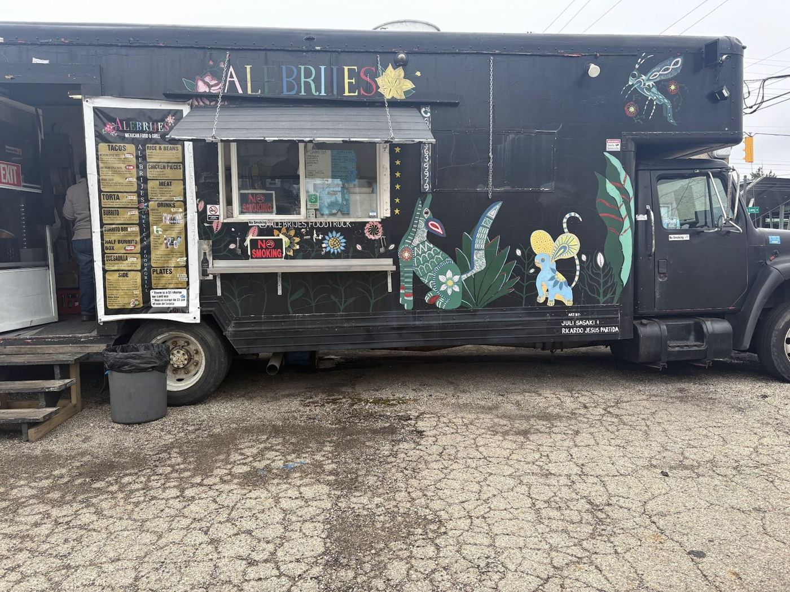

The truck

A colorful taco truck at 1500 E Long St. Customers mention friendly people in the truck, quality food, clean presentation and flavor in every bite.

A colorful taco truck at 1500 E Long St. Customers mention friendly people in the truck, quality food, clean presentation and flavor in every bite.